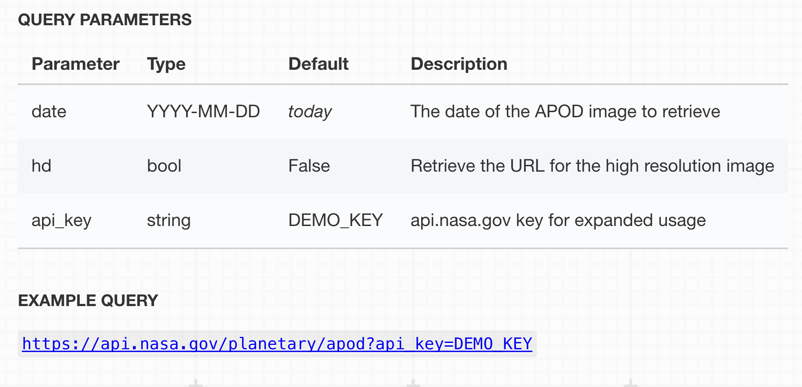

Astronomy Picture Of The Day
How to interact with APIs using JSON and Javascript?

What is APOD API?
The Astronomy Picture of the Day (APOD) is easily one of the most commonly used APIs that NASA provides to the public. It allows us to get the NASA featured picture on a specific day and information about that picture. We will explore how this fantastic API work and what we can do with it. In order to interact with the API, we first need to have a basic understanding about JSON and Javascript. Let's dive into it!
Why JSON and Javascript?
JSON stands for Javascript Object Notation. It is a syntax for storing and exchanging data between a browser and a server. As its name indicates, JSON is designed so that it can be used in tandem with Javascript effortlessly. When data are exchanged between the browser and the server, both ends of the interaction would have data contained in Javascript objects. Those objects are converted to JSON and sent over the network to the other end where they will be reversed back to a Javascript object and parsed for their intended use. As such, JSON and Javascript are critical to our interaction with APIs.
As there are plenty of resources covering JSON and Javascript, we are not going into details about them. Instead, you can visit below resources to get up to speed with understanding what they are and how they work. Take your time to complete some of the examples provided on the sites and try to understand the basics of what they are and how they are useful in web development. Feel free to visit other pages too if you need. Then we will dive into a specific example of how to use them to interact with the Astronomy Picture Of the Day (APOD) API.
Javascript Resources
JSON Resources
Interacting with APOD API
Now that you have the basic of JSON and Javascript, let's us begin to interact with the APOD API and pull some interesting images and their details.
From the high level, the APOD API allows us to send a request to NASA server to get their Picture of the Day on our given date. The server will then respond to our request with a JSON containing a URL to the picture and all related information. For a more detailed explanation of how to use the API, please visit the official document here.
To send a request to the API, we will send a HTTP GET request in the form of an URL that can include three parameters date, hd, and api_key.
If we were to send the request as-is just like the example query above, we will always only be getting the picture of the day of the current date. But what if we want to see the picture for a day in the past? Then we can amend our request to include the date parameter, and the new request will look like below. Notice the ampersand sign '&' in between the parameters.
https://api.nasa.gov/planetary/apod?api_key=DEMO_KEY&date=2015-08-25
Then the server will process our request and return us with the below JSON object.

Note in the above JSON object, you can see several property-and-value pairs within the object. For example, the first property is "copyright" which has the value of "Matthew Dieterich". Now that we have received the JSON object, it is time we used our Javascript to parse the details in the object and display it to our website. Below you will find the Javascript and HTML code for our site and we will go into details right below it. Note that the Result tab will not actually work in our JSFiddle below due to request restrictions but it gives you a sense of what our page will look like. A fully interactive demo page can be found on the next page when we are done. But if you are interested in seeing what the API is about right now, you can see NASA's site that makes use of their API here.
Explantion
As you can see in the HTML, we create a form for the user to submit the date that they desire to see the Astronomy Picture Of the Day. Once they fill it out and click the 'Show me the picture!' button, our Javascript will make a request to the server accordingly. Let's break it down step by step what is going on here
document.addEventListener('DOMContentLoaded', bindButtons);
function bindButtons() {
document.getElementById('submitButton').addEventListener('click', function(event) {
var req = new XMLHttpRequest();
var url = "https://api.nasa.gov/planetary/apod?api_key=";
var appId = "DEMO_KEY";
url += appId;
if (document.getElementById("searchDate").value != '') {
url += "&date=" + document.getElementById("searchDate").value;
}
req.open("GET", url, true);
This section is creating an event listener that will wait for the user to enter the date. Once the user has entered the date and clicked the button, it will proceed to create an XMLHttpRequest to the NASA server. Notice that we are using the 'DEMO_KEY' here for illustration purposes, but you can always include your personal key that you have registered before. After appending the API key, the request will be appended with the desired date if the user has entered one. If they simply clicked the button, our code will not append this date parameter in the request and the server will just assume we are asking for the current day.
Then on the last line, we are creating a GET request to the server via our completed URL by making an asynchronous call (the true parameter specifies that). We would like to make an asynchronous call because ideally we don't want our website to freeze while it waits for the response from the server, which could take longer depending on the traffic and internet speed.
So that is it for the making request portion of our code. Notice that technically we have NOT sent our request as of yet as we still need to specify how the program will process the reply from the server first. Let's take a look at that portion next.
req.addEventListener('load', function() {
if (req.status >= 200 && req.status < 400) {
var response = JSON.parse(req.responseText);
document.getElementById('title').textContent = response.title;
document.getElementById('date').textContent = response.date;
document.getElementById('explanation').textContent = response.explanation;
document.getElementById('pic').src = response.hdurl;
console.log(response);
} else {
console.log("Error in network request: " + req.statusText);
}
});
req.send();
event.preventDefault();
});
}
Here, we are creating an event listener on our request to wait for it to completely load the response being sent from the NASA server. Then we check if the status of the request is from 200 to less than 400, which generally means that the request was processed properly without any major error. If there was an error, the error message will be logged to the console of the browser.
Next, we translate the JSON reponse from the server into a Javascript object using the built-in parse method of Javascript. Finally, we will append all the details that had been parsed from the object to our HTML document by using the getElementById method. As you can see, it is pretty straightforward to extract the title, date, explanation, and hdurl from the JSON object and assign it to our HTML elements to ultimately display them to the user of our website
Last but not least, the last 2 lines of our code are where we actually send our request to the server. The event.preventDefault(); line is to ensure that the page doesn't refresh when the user click the "Show me the picture!" button, which will mess up with how our program functions.
By now, hopefully you have got a better understanding of how to make request to the APOD API and process the server response in order to display the details to our end-users. Next page, you will see a fully-functional demo of what we have covered so far! After the demo, we will continue with another example of how to interact with the EPIC API.